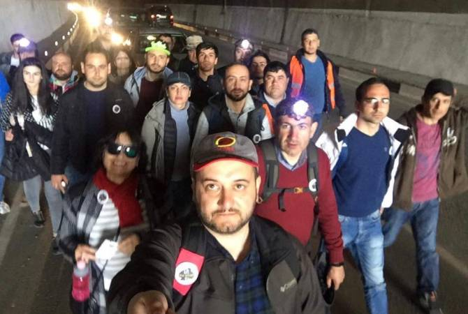

31.03.2018 - 12.04.2018
«Իմ քայլը»

«Քաղաքացիական պայմանագիր» կուսակցության վարչության անդամ և ՀՀ ԱԺ 6-րդ գումարման պատգամավոր Նիկոլ Փաշինյանը 2018 թվականի մարտի 31-ին ընդդեմ Սերժ Սարգսյանի հետագա իշխանավարմանը սկսեց բողոքի քայլերթը, որը մեկնարկեց Գյումրի քաղաքից՝ անցնելով Վանաձոր, Դիլիջան, Հրազդան, Աբովյան քաղաքներով և ապրիլի 13-ի հասավ մայրաքաղաք Երևանի Ազատության հրապարակ, որին հաջորդեցին շուրջօրյա հանրահավաքները: